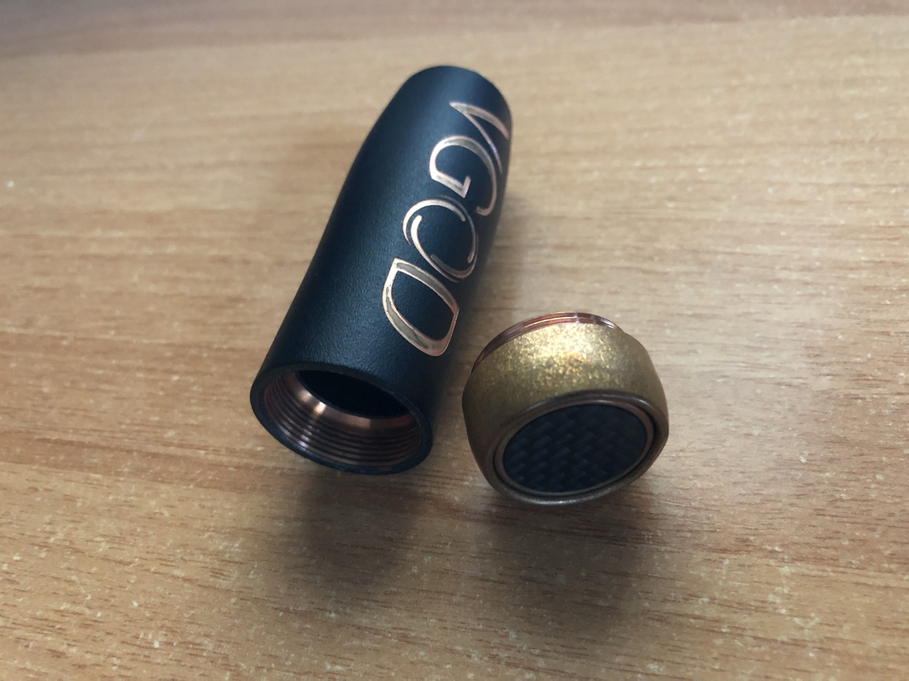

Mod
Si quieres empezar a vapear, en lo primero en lo que te tienes que fijar es en el mod. Y es en este apartado donde saldrás con conocimientos suficientes como para escoger el mod que más se adapte a ti.
El mod es el elemento desde donde parte todo el proceso de vapear y por eso, es el encargado de subministrar la energía hacia las resistencias para que éstas se calienten y evaporizen el líquido del algodón.
Todos los mods, tienen uno o varios botones. El botón principal, es el encargado de transmitir la potencia hacia las resistencias, cuando se pulsa (en los mods de tipo mecánico, solo suelen tener el botón o pulsador principal). Suelen haber también dos botones más que se encargan, siempre dependiendo del mod en cuestión, de modificar parámetros en la configuración para realizar una acción (normalmente para subir o bajar la graduación de voltaje o watage).
Tipos de mods
Teniendo en cuenta la experiencia del usuario, ya que algunos tipos de mod son específicos para vapeadores más experimentados, los mod se clasifican de la siguiente forma:
Mods electrónicos: Este tipo de mod viene normalmente equipado con una pantalla digital, desde donde el usuario puede visualizar los modos de vapeo que el mismo te permite usar, ver los parámetros y las características de uso a las que se va a someter la resistencia (voltaje, watage), y la intensidad que la resistencia tiene en amperios. Dependiendo de la calidad del mod, variarán las posibilidades y las funcionalidades del aparato.
Los mods electrónicos vienen con un chip integrado, que a parte de las posibilidades que he mencionado anteriormente, gestionan las baterías para tener mayor durabilidad y también te permiten gozar de un sistema de seguridad que, en el caso de que la temperatura de las resistencias sea demasiado alta, o en el caso de haber un cortocircuito, el mod deja de funcionar temporalmente hasta que el problema se haya solucionado. Ocurre lo mismo con el estado de las baterías: si el chip detecta que las baterías están en mal estado y pueden o son un peligro para vapear, se activa el sistema de seguridad.
Hay marcas que fabrican mods muy especializados y con opciones muy sofisticadas que hacen del acto de vapear, algo más sofisticado y personalizable.
Mods mecánicos / Mech mod: Tenemos que tener en cuenta que los mods de tipo mecánico solo son para vapeadores experimentados.
Los mods mecanicos suelen ser un tubo de cobre, con una rosca hembra en su parte superior (para colocar el atomizador), una rosca hembra en su parte inferior que nos permite, si desenroscamos el pulsador, introducir en su interior una batería.
Su funcionamiento es el siguiente, una vez colocado el atomizador y la batería, el pulsador de la parte inferior, cuando es pulsado, empuja la batería en dirección al atomizador hasta que el pin positivo del mod hace contacto con la batería. En este momento, la energía de la batería es transmitida hacia el atomizador, provocando de esta forma, el incremento de la temperatura de las resistencias y por consiguiente, la evaporación del líquido.
Se debe ir con mucha precaución con este tipo de mods, se deben utilizar siempre baterías adecuadas y en perfecto estado, el mod debe estar siempre limpio y sin imperfecciones internas y lo que es más importante: ya que como no usan ningún chip integrado, no ofrecen ningún tipo de seguridad electrónica (como si ocurre en los mods electrónicos), si por ejemplo, el pulsador se acciona solo o hay un cortocircuito. Motivos que acostumbran a ser los causantes de explosiones o sobrecalentamientos.
Los mech mod se utilizan cuando se busca una experienza más simple y básica, para muchos, más autentica. Dichos mods ofrecen la entrega de energía total al nivel de carga que tenga la batería en ese momento (si la batería está con carga completa, la potencia será de 4.2V en el caso de baterías 18650, es decir, la máxima potencia).
La entrega de energía, al no tener procesos electrónicos intermediarios, es más directa y rápida. Este tipo de mods suelen tener mayor durabilidad con respecto a los electrónicos por su construcción simple y su falta de circuitería o cableado.
